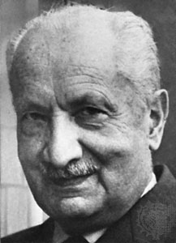

Martin Heidegger (1889–1976) was a German philosopher whose work is perhaps most readily associated with phenomenology and existentialism, although his thinking should be identified as part of such philosophical movements only with extreme care and qualification. His ideas have exerted a seminal influence on the development of contemporary European philosophy. They have also had an impact far beyond philosophy, for example in architectural theory (see e.g., Sharr 2007), literary criticism (see e.g., Ziarek 1989), theology (see e.g., Caputo 1993), psychotherapy (see e.g., Binswanger 1943/1964, Guignon 1993) and cognitive science (see e.g., Dreyfus 1992, 2008; Wheeler 2005; Kiverstein and Wheeler 2012).